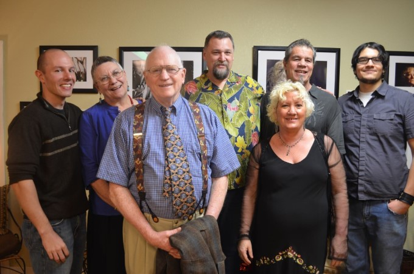
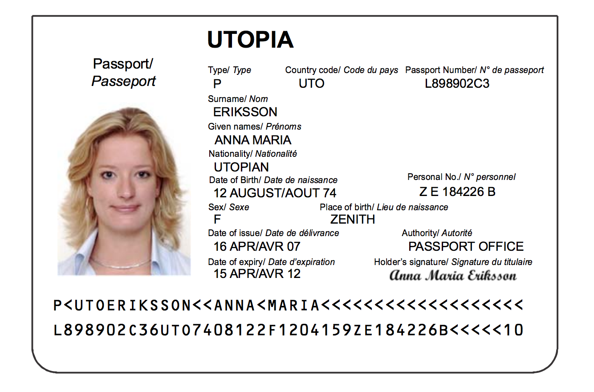
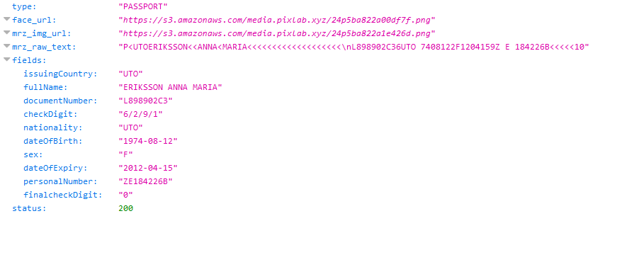

Getting Started with the PixLab REST APIs
Learn the fundamentals and start building smart Websites and Webapps by integrating PixLab's REST APIs to analyze images & videos with ease.
Version 2.197 (Release Notes ↗)
In this introductory course, you'll learn how to utilize the PixLab REST API to process and analyze your media assets, including images and video frames, using your favorite programming language. The API Portal, REST API Reference, eKYC API, Vision LLM & Playground, and the List of API Endpoints are your go-to references once you understand how PixLab handles incoming HTTP requests. Let's get started!
- Features of the PixLab REST API
- Unified API Access Endpoint URL
- API Endpoints Categories
- Your First API Call
- Detect & Extract or Mark Faces
- Detect & Blur Human Faces
- Programmatically Generate MEMEs
- Challenge Bots by Dynamic Image Generation
- Scan Passports, ID Cards & KYC Verification Check
- Moderate Image Uploads According to their NSFW Score
Features of the PixLab REST API
-
Access to over 130 battle tested, intelligent API endpoints and growing...
-
99.9*% uptime guaranty. 24/7 friendly support assistance.
-
No hidden fees, no contract. Cancel your plan at anytime!
-
Rich Documentation, Production Ready Code Samples & Open source Advocates 💗
Unified API Access Endpoint
-
The PixLab API’s base endpoint is located at
https://api.pixlab.io/. -
The request URL scheme is
https://api.pixlab.io/cmd?param=val¶m2=val2wherecmdis the API Endpoint you want to call such as FACEDETECT (for face detection), DOCSCAN (for Passports & ID scanning), MOGRIFY (for face blurring), NSFW (for adult & bloody content detection), ROTATE, and hundreds of others andparam=valare the endpoint parameters (if any). -
Each endpoint may handle both
GET&POSTrequests at the same time. PixLab is shipped with over 130 endpoints and all of them are invoked using exactly the same way. -
Health & Status dashboard is located at status.faceio.net (a PixLab product) for real-time monitoring.
Summary
| Access Point URL | api.pixlab.io |
| API Status Endpoint | api.pixlab.io/status |
| Architecture | RESTFul |
| Authentication | Key Based |
| HTTP Response MIME Type | application/json or BLOBs |
| HTTP Status & Error Codes | Refer to the API Documentation |
| API Endpoints | Listed Here |
API Endpoints Categories
The PixLab API is broken down into three main categories:
-
Media Processing where you can apply series of transformations to your input media assets such as image resizing, crop, motion blur, rotation, etc. using your favorite programming language. Example of such endpoints: CROP, BLUR, ROTATE, RESIZE, and dozens of others.
-
Media Analysis where you can apply series of Machine Learning analysis that does not alter the contents of the input image or video frame but rather return its computation result. For example, the NSFW endpoint, returns a score value of type float between 0 and 1. The more this value approaches 1, the highly your input image contain bloody, gory or adult scene. FACEDETECT on the other hand, output the rectangle coordinates for all the detected human faces in a given image or video frame. Example of such media analysis endpoints includes NSFW for not suitable for work content detection, TAGIMG for content extraction & image tagging, FACEDETECT is for face detection, DOCSCAN for Passports & ID cards scan, and many others.
-
Mixing Both. The real power of the PixLab APIs really shine and comes to evidence when both Analysis & Processing API calls are mixed. You can unlock endless possibilities and achieve amazing transformations to your input assets using this powerful combination. You can for example detect & blur human faces, censor image uploads according to their NSFW score, generate a Captcha-like dynamic image to challenge bots on your platform, mimic Snapchat filters, and so forth. The reader is encouraged to take a look at the examples section for production ready code samples that illustrate this.
The code samples listed here and dozen of others are also available on the PixLab Github sample Page.
Your First API Call
In order to familiarize yourself with the PixLab API, Let's start with the simplest command: GRAYSCALE. Given an input image, the GRAYSCALE endpoint produce a graylevel image in which the only colors are shades of gray like the following:
Input Picture

GRAYSCALE (api.pixlab.io/grayscale) Picture Output
The output, grayscaled image above was obtained using the following code snippets:
- Regardless of the underlying programming language, the logic is always same. We made a simple HTTP GET request with the input image URL as a sole parameter. Most API Endpoints support both GET & POST HTTP methods at the same time so you can easily upload your images & videos directly from your mobile or web application for processing. Refer to the Code Samples page on how to do that.
- Once your request executed, a JSON object with a
linkfield to the image output URL alongside with astatuscode is returned by default to the caller. Status code200indicates success. Any other code indicates failure with an appropriate error message. Refer to the API documentation for the full list of status codes. -
Sometimes, you would want the raw image content (BLOB) to be returned directly to you instead of the JSON object holding the link to the media asset output. To do that, simply set the
blobparameter totrueon the incoming HTTP request as follows:https://api.pixlab.io/endpoint?blob=true¶m=val. With theblobparameter turned on, the raw asset content is returned directly to the caller rather than being stored on the pixlab.xyz storage cluster. -
By default, any processed asset is automatically stored on the globally distributed (via Cloudflare) pixlab.xyz storage cluster so you can access your output assets at request (via the
linkfield of the returned JSON object). If privacy or restrictive storage requirements is an issue, you can connect your own AWS S3 Bucket to serve as the main storage gateway. That way, each time a video or image is processed, it is automatically stored on your own S3 bucket rather than the PixLab public one. This is what most serious customers prefer to do, and this option gives you full control over your processed media assets. Sign-in to your account on the PixLab Console to connect your AWS S3 Bucket.
Detect & Extract or Mark Faces
Let's tackle a more serious, yet very useful example that mixes analysis & processing API calls at the same time now you understand how the PixLab API Servers handle your incoming HTTP request. First, we will try to detect all human faces present in a given image or video frame via the FACEDETECT endpoint, then, we will extract each detected face in a new image using the CROP endpoint (Useful for your KYC verification form).
This is easily done via the following code snippets:
To perform such operation, two endpoints are actually needed: One for the analysis phase, the other for processing:
- FACEDETECT is the analysis endpoint that must be called first. It outputs the rectangle coordinates for each detected face in a given image or video frame. This endpoint, its expected parameter, and JSON output result is documented here.
- CROP is called later after we obtain the rectangle coordinates for all the detected faces. In which case, we simply pass these coordinates to crop untouched and the target region of the image where each face is located is extracted and saved in a new image. Find out more information on the CROP endpoint here.
- Alternatively, if you prefer marking the face(s) instead of extracting it, you can rely on the DRAWRECTANGLE endpoint to perform such operation.
Detect & Blur Human Faces
Similarly, we could apply a blur filter on all the detected human faces in a given image or video frame using only two PixLab Endpoints. This is very useful in the age of privacy. With privacy regulations changing all the time around the globe and the recent GDPR that came into effect in the EU, it is recommended to comply with all regulations per default by adding/integrating face blurring into your services. A typical output picture after processing should look like the following:
Input Picture
Output Blurred Faces
Again, this is easily achieved using the following snippets:
- Just like the previous example, we relied on the FACEDETECT endpoint to output the rectangle coordinates for each present human face then, we immediately called the MOGRIFY endpoint, and we simply passed the facial coordinates untouched to mogrify to blur the target regions of the input image hence, the facial coordinates. The mogrify endpoint, its expected parameters, and output results is documented here.
Programmatically Generate MEMEs
Let's generate a funny MEME by drawing some text on top of the famous Cool Cat, public domain image using the DRAWTEXT API endpoint. Given an input image, draw some text on TOP & BOTTOM of the image to obtain something like this:
Input Picture
Output Picture, dynamically generated DRAWTEXT
The output picture with text drawn on TOP & BOTTOM was obtained via the following code snippets:
- DRAWTEXT is the sole endpoint needed to generate such image. It expect the text to be displayed on TOP, CENTER or BOTTOM of the target image. This endpoint is so flexible that you can supply Font Name, Size & Color, Stroke width, etc. Refer to DRAWTEXT documentation for additional information. Notice that there is a more flexible endpoint named DRAWTEXTAT which let you draw text on any region of the target image by specifying the X & Y coordinates instead.
Challenge Bots by Dynamic Image Generation
In this sample, we'll dynamically create a 300x300 pixels, PNG image with a yellow background and draw some text on top. This is very useful, if you want for example to challenge bots on your platform by implementing a minimalistic yet powerful Captcha-like challenge. A typical generated image should look like the following using the steps below:
- A blank image is requested first via a call NEWIMAGE which export to PNG by default but you can change the output format at request. We set the image height, width and the background color respectively to 300x300 with a yellow background color.
- Note, if one of the height or width parameter is missing (but not both), then the available length is applied to the missing side and if you want a transparent image set the color parameter to none.
- We finally DRAW our text at the center of the newly created image using the WOLF Font, black color and 35 px font size. One could also draw lines, a rectangle, and other shapes for example to surround faces, merge with other images and so on...
After generating such image, the automated script, hence the bot scrapping your platform, has to resolve your challenge by typing the text drawn on top of this image. The whole image creation process is done via the following code snippets:
Scan Passports, ID Cards & KYC Verification Check
In this sample, you will learn how to make use of the DOCSCAN endpoint to implement a minimalistic KYC (Know Your Customer) form for your web site, and verify the authenticity of the personal information submitted by any of your users using an image upload of their ID card or Passport.
We'll start by scanning a government issued, travel document such as Passport, Visa or ID card from various countries using the DOCSCAN API endpoint. Besides its highly accurate text scanning capability, DOCSCAN should also extract (i.e. crop) any detected face within the target document. A typical input passport specimen and the scanned output fields should look like the following after processing:
Input Passport Specimen
Extracted MRZ Fields
The extracted face, plus the scanned Passport MRZ fields were obtained via the following code snippets:
- DOCSCAN is the sole endpoint needed for such a task. It support various ID cards besides Passports & Visas and does face extraction automatically for you.
-
PixLab recommend that you connect your AWS S3 bucket via the dashboard so that, any extracted face or MRZ crop is automatically stored on your S3 bucket rather than the PixLab one. This feature should give you full control over your analyzed media files.
Refer to the docscan documentation for additional information such as the set of scanned fields, where face crops are stored, how to process PDF documents instead of images and so forth.
Moderate Image Uploads According to their NSFW Score
In this last sample, we shall censor image uploads according to their NSFW score by applying a blur filter on each image if, and only if, its NSFW score is high enough. A typical blurred picture should look like the following after processing:
To filter, and obtain such blurred image, we used the following code snippets:
To perform such operation, two endpoints are actually needed. One for the analysis phase, the other for processing:
- NSFW is the analysis endpoint that must be called first. It does perform nudity & adult content detection and returns a score value between 0..1. The more this value approaches 1, the more your picture/frame is highly nsfw. Find out more information about NSFW here.
- BLUR is called later only if the nsfw score value returned earlier is greater than certain threshold. In our case, it is set to 0.5. The blur endpoint is documented here.
Further Reading
Congratulation 👏. If you have followed this tutorial since the beginning, you should already have a good understanding on PixLab handle your incoming HTTP request. As you may notice, all the examples shown above are fully operational, easy to read and self-explanatory. The reader is now encouraged to dig further into the PixLab API by following the links below. Don't forget to refer to the Github sample repository for more samples.